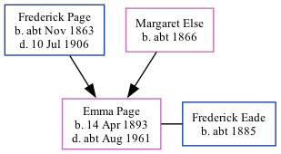

Emma Janet Eade (née Page) 1893 - c1961
[ Home ] | [ Calendar ] | [ Surnames Index ] | [ Family History ]The daughter of Frederick Page (a bricklayer) and Margaret Else (a charwoman), Emma Page, the third cousin once-removed on the father's side of <a href="I1.html">Nigel Horne</a>, was born in Folkestone, Kent, England on Apr 14, 1893<span class="citation">1,2,3,4,5</span> and baptized there at St John's Church on Apr 19, 1893. She married Frederick Eade at St James, Norlands, London, England on Oct 27, 1912<span class="citation">6</span>. On Mar 31, 1901, she lived at 11 Park Street in Folkestone<span class="citation">1</span>. <p>She died <i>c.</i> Aug 1961 in Canterbury, Kent, England<span class="citation">3,5</span> and was buried at Ss Mary & Ethelburga, Lyminge, Kent on Sep 23, 1961<span class="citation">5</span>.
Parents
- Frederick Stephen was born c. Nov 1863
- Margaret Ann was born c. 1866
Citations
- 1901 England, Wales & Scotland Census - Findmypast (was age 7 and the daughter of the head of the household)
- England & Wales births 1837-2006 - Findmypast
- England & Wales deaths 1837-2007 - Findmypast
- Kent Baptisms - Findmypast
- Kent Burials - Findmypast
- England & Wales Marriages 1837-2005 - Findmypast
Media
England & Wales births 1837-2006 - BMD/B/1893/2/AZ/000447/305
Kent Baptisms - GBPRS/CANT/B/96669443
England Births & Baptisms 1538-1975 - R_884236537
England & Wales marriages 1837-2005 - BMD/M/1912/4/AZ/000757/038
Kent Burials - GBPRS/CANT/D/95385192
England & Wales deaths 1837-2007 - BMD/D/1961/3/AZ/000249/056
Family Tree
Generated by Ged2Site. Last updated on Jul 20, 2025